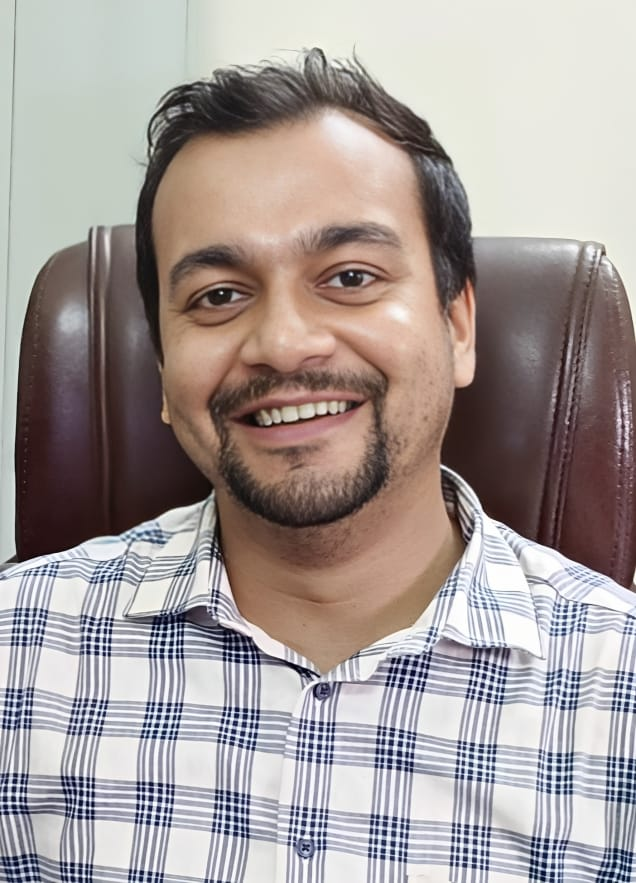
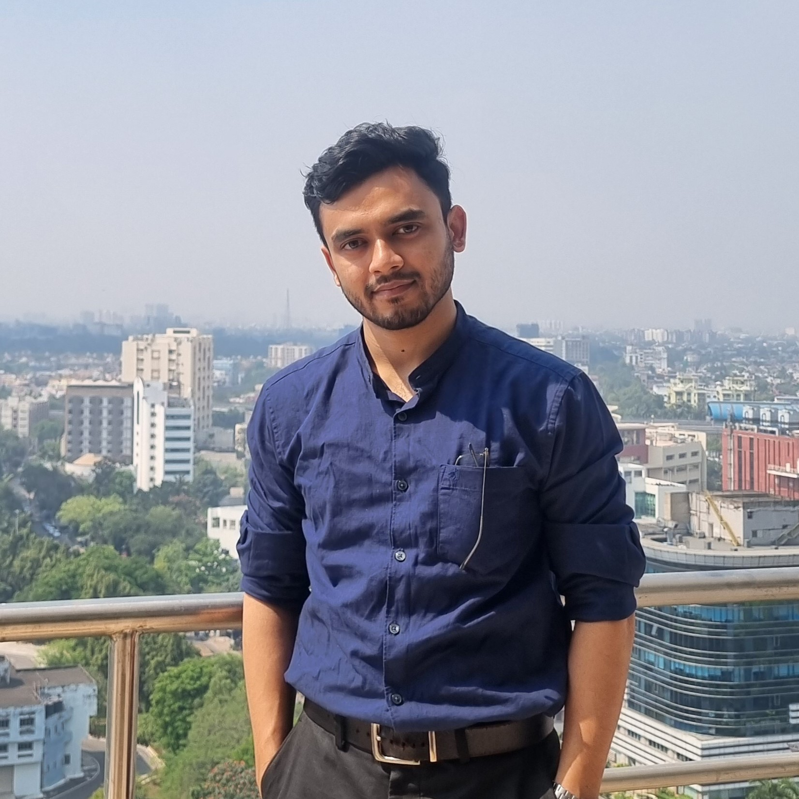
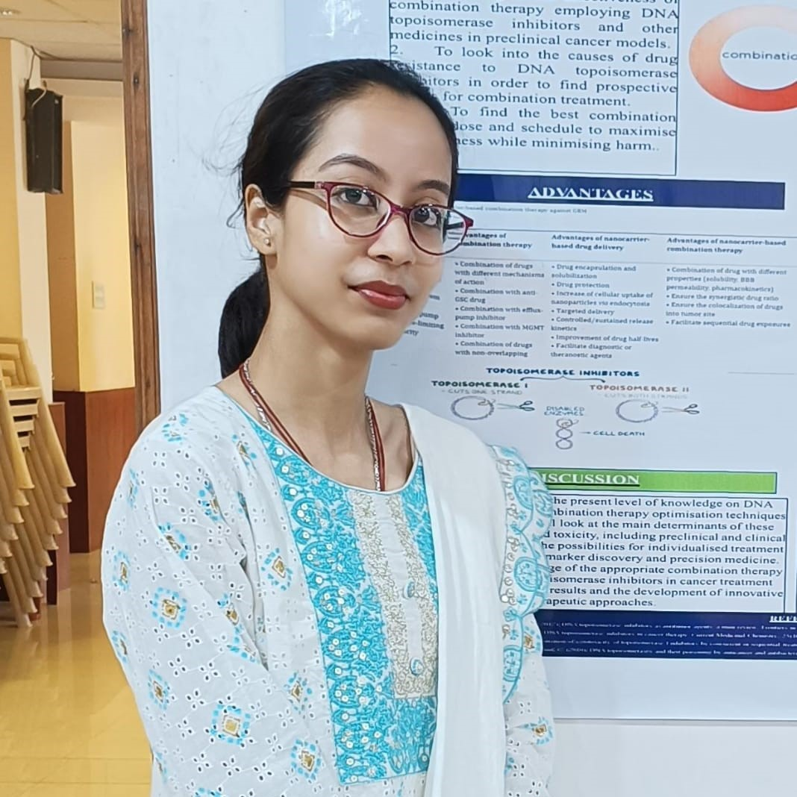

RESEARCH TEAM

Dr. Chiranjib Sarkar
Assistant Professor
Department of Bioinformatics
University of North Bengal
Team Members


Dipayan Sarkar (UGC-CSIR-SRF)
PhD Scholar
Deep learning-based framework for protein-protein interaction network prediction
Koushik Bardhan
Research Scholar
Deep learning-based study on biological network integration
Maitree Sengupta
Research Scholar
Multi-omics network integration for Rheumatoid Arthritis
M.Sc. Dissertation Students
University of North Bengal, West Bengal
- Suman Modak (2023), M.Sc. (Bioinformatics), University of North Bengal, West Bengal
- Koushik Bardhan (2023), M.Sc. (Bioinformatics), University of North Bengal, West Bengal
- Sayan Paul (2024), M.Sc. (Forensic Science), Maulana Abul Kalam Azad University of Technology, West Bengal
- SK Asif Iqbal Khan (2024), M.Sc. (Bioinformatics), University of North Bengal, West Bengal
- Barnali Biswas (2024), M.Sc. (Bioinformatics), University of North Bengal, West Bengal
- Biswayan Ghosh (2024), M.Sc. (Bioinformatics), University of North Bengal, West Bengal
- Pallabi Sarkar (2025), M.Sc. (Bioinformatics), University of North Bengal, West Bengal
- Bhuwan Sharma (2025), M.Sc. (Bioinformatics), University of North Bengal, West Bengal
- Ananya Sen (2025), M.Sc. (Bioinformatics), University of North Bengal, West Bengal
- Awanish Singh (2025), M.Sc. (Bioinformatics), Central University of South Bihar, Bihar